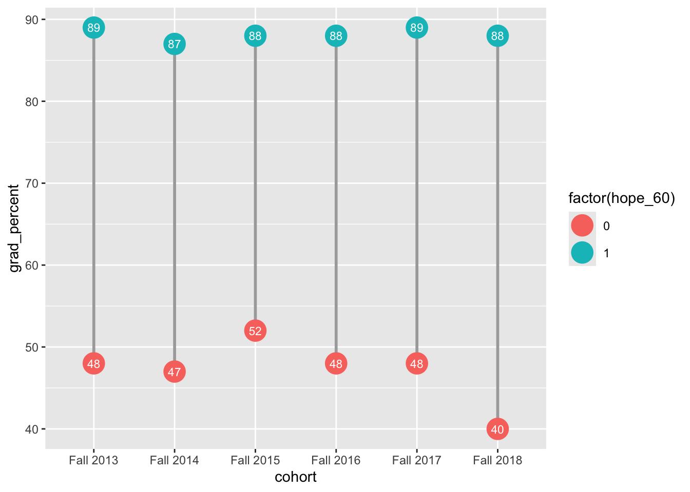
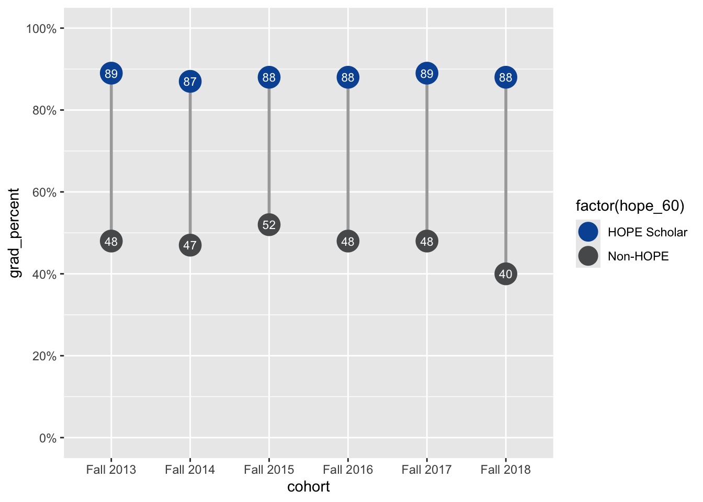
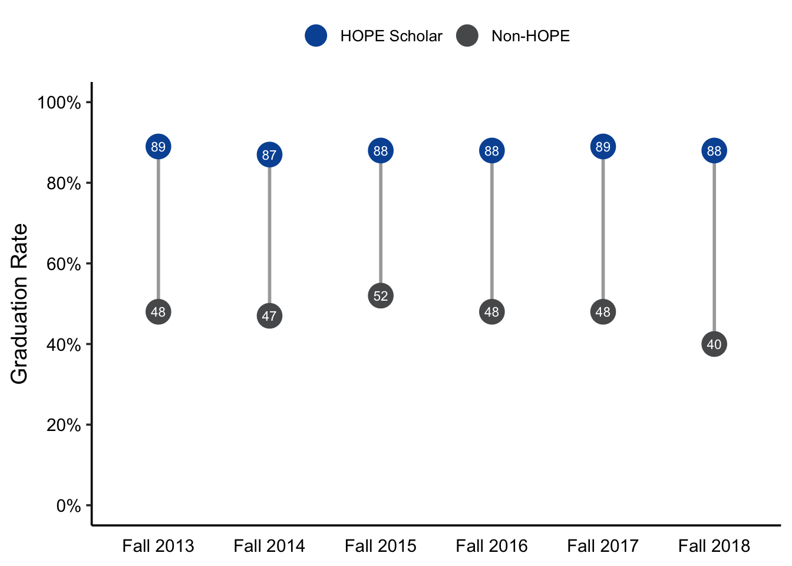

library(readxl)
library(dplyr)
library(tidyr)
library(ggplot2)
library(glue)Dumbbell Visualization Tutorial
Visualization
Student Success
Introduction
This tutorial will demonstrate how to create a dumbbell plot, a type of plot that is useful for comparing the difference between 2 groups.
We will make a simple plot that is easy to digest by leadership
This visualization will represent graduation rates for different cohorts, comparing two groups: HOPE Scholars and Non-HOPE Scholars. We’ll cover loading required packages, loading and cleaning data, and building the plot step by step. The data are linked here: HOPE Data
Load packages
To begin, load the following R packages.
readxl helps us load data from Excel files. dplyr and tidyr are used for data cleaning and manipulation. ggplot2 is the core package for creating plots. glue is used to format text in our plot labels. 2. Load Data
Read in the Data
Next, load the data using the read_excel() function from the {readxl} package. This loads the data from the Excel file located at “01_data/gsu_demo_data.xlsx” and assigns it to a variable hope_raw.
hope_raw <- read_excel("01_data/gsu_demo_data.xlsx") Clean the data
Next, clean and prepare the data for visualization. We filter out any rows with missing values in the hope_60 column, group the data by cohort and hope_60, and calculate the graduation rates for each group.
hope_grad_60 <- hope_raw %>%
drop_na(hope_60) %>%
group_by(cohort, hope_60) %>%
summarise(hope_60_count = n(), grad_count = sum(grad)) %>%
mutate(grad_percent = round(grad_count / hope_60_count * 100)) Here’s a breakdown of the steps:
drop_na(hope_60): Removes rows where the hope_60 column has missing values. group_by(cohort, hope_60): Groups the data by cohort and hope_60 (the scholarship status). summarise(): Calculates the number of students in each group and the number of graduates (grad_count). mutate(): Creates a new column grad_percent to store the graduation percentage for each group. After cleaning, we now have a dataset ready for plotting (hope_grad_60).
Create the Plot
Now, let’s create the plot step by step. We’ll start by building the basic structure and then add components like geom layers, scales, and themes.
Basic Plot Structure The foundation of the plot is created using the ggplot() function, which defines the data and aesthetic mappings.
plot_dumbbell <- ggplot(data = hope_grad_60, mapping = aes(x = cohort, y = grad_percent)) +
geom_line(
aes(group = cohort),
color = "darkgray",
linewidth = 1
) +
geom_point(
aes(color = factor(hope_60)),
size = 7
) +
geom_text(
aes(label = glue("{grad_percent}")),
color = "white",
size = 3
)
plot_dumbbell
data = hope_grad_60: We specify the cleaned data to use. mapping = aes(x = cohort, y = grad_percent, color = factor(hope_60)): We map the cohort to the x-axis, grad_percent to the y-axis, and hope_60 to the color of the points and lines. geom_line(): Adds a line connecting the points. We set it to darkgray for better contrast. geom_point(): Adds points to the plot with a size of 7. geom_text(): Adds text labels showing the grad_percent value, formatted using the glue() function. 4.2 Scales and Customization Next, we modify the scales and labels to ensure they display in a meaningful way.
plot_dumbbell <- plot_dumbbell +
scale_y_continuous(
limits = c(0, 100),
breaks = seq(0, 100, 20),
labels = function(x) paste0(x, "%")
) +
scale_color_manual(
values = c("#58595B", "#0554A3"),
labels = c("Non-HOPE", "HOPE Scholar")
) +
guides(color = guide_legend(override.aes = list(size = 6), reverse = TRUE))
plot_dumbbell
scale_y_continuous(): Adjusts the y-axis to display from 0 to 100% graduation rates, with breaks every 20%. scale_color_manual(): Customizes the colors for the two groups (Non-HOPE and HOPE Scholar). guides(): Customizes the color legend by adjusting the size of the legend keys and reversing the order. 4.3 Themes and Aesthetics Finally, we refine the appearance of the plot by applying a clean theme and customizing other aesthetic elements.
plot_dumbbell <- plot_dumbbell +
labs(y = "Graduation Rate") +
theme_classic(base_size = 14) +
theme(
axis.title.x = element_blank(),
axis.title.y = element_text(color = "black"),
axis.text.x = element_text(color = "black", margin = margin(t = 5)),
axis.text.y = element_text(color = "black"),
axis.ticks.x = element_blank(),
legend.title = element_blank(),
legend.position = "top",
legend.text = element_text(size = 10)
)
plot_dumbbell
labs(): Sets the label for the y-axis as “Graduation Rate”. theme_classic(): Applies a simple, clean theme with a base size of 14 for text. theme(): Customizes various elements like axis titles, axis text, and legend appearance. 5. Display the Plot
Conclusion
In this tutorial, we walked through the process of creating a dumbbell plot in R using the ggplot2 package. We covered:
Loading necessary packages for data manipulation and visualization. Loading and cleaning the data to prepare it for visualization. Building the plot by adding geom layers for lines, points, and text, customizing scales, and refining the appearance using themes. By following these steps, you can create informative and visually appealing plots to represent your data effectively.